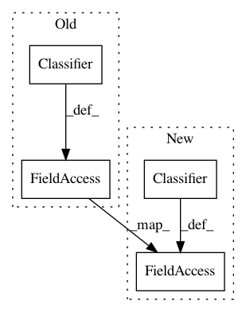

2b89324f1d9e48eacf19b4e0eb998c1e7835f747,finetune/datasets/stanford_sentiment_treebank.py,,,#,42
Before Change
if __name__ == "__main__":
// Train and evaluate on SST
dataset = StanfordSentimentTreebank(nrows=1000).dataframe
model = Classifier(interpolate_pos_embed=False, n_epochs=3, batch_size=4, lr_warmup=0.1, val_size=0, max_length=64, base_model=GPTModel)
print(model.config.base_model_path)
trainX, testX, trainY, testY = train_test_split(dataset.Text.values, dataset.Target.values, test_size=0.3, random_state=42)
model.fit(trainX, trainY)
accuracy = np.mean(model.predict(testX) == testY)
After Change
if __name__ == "__main__":
// Train and evaluate on SST
dataset = StanfordSentimentTreebank(nrows=1000).dataframe
model = Classifier(interpolate_pos_embed=False, n_epochs=8, batch_size=2, max_grad_norm=1.0, lr_warmup=0.1, val_size=None, max_length=64, base_model=GPT2Model, tensorboard_folder="./sst", l2_reg=0.0, lr=1e-4)
print(model.config.base_model_path)
trainX, testX, trainY, testY = train_test_split(dataset.Text.values, dataset.Target.values, test_size=0.3, random_state=42)
model.fit(trainX, trainY)
accuracy = np.mean(model.predict(testX) == testY)
In pattern: SUPERPATTERN
Frequency: 3
Non-data size: 4
Instances
Project Name: IndicoDataSolutions/finetune
Commit Name: 2b89324f1d9e48eacf19b4e0eb998c1e7835f747
Time: 2019-03-14
Author: benlt@hotmail.co.uk
File Name: finetune/datasets/stanford_sentiment_treebank.py
Class Name:
Method Name:
Project Name: IndicoDataSolutions/finetune
Commit Name: e90d0bb446ad6da9d17ba1ab2d3fe6365e152961
Time: 2020-02-05
Author: benlt@hotmail.co.uk
File Name: finetune/datasets/stanford_sentiment_treebank.py
Class Name:
Method Name:
Project Name: IndicoDataSolutions/Enso
Commit Name: dfb3893dd2a47fe7482d5237eaf696eba8c25f62
Time: 2018-10-16
Author: benlt@hotmail.co.uk
File Name: enso/experiment/finetuning.py
Class Name: Finetune
Method Name: __init__